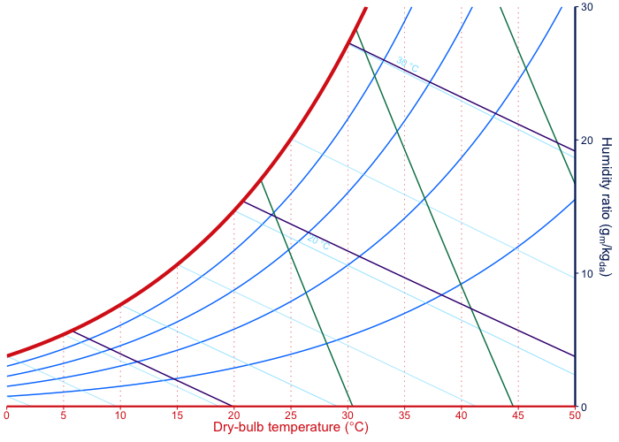
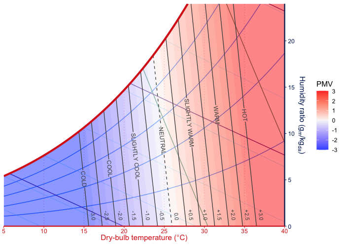

‘ggplot2’ extension for making psychrometric charts.
Features
- ggplot2-native psychrometric charts with SI/IP units and Mollier orientation.
- Preset grid and style helpers for common psychrometric chart layouts.
- Psychrometric stats for relative humidity, wet-bulb temperature, vapor pressure, specific volume, enthalpy, and humidity ratio.
- State points, process lines, and filled operating zones for HVAC workflows.
- Thermal comfort overlays for PMV, SET, adaptive comfort, and PMV-based ASHRAE 55 / EN 15251 comfort zones.
Installation
You can install the development version from GitHub with:
# install.packages("remotes")
remotes::install_github("hongyuanjia/ggpsychro")Example
The creation of a psychrometric chart starts with ggpsychro(). The result is a ggplot object, so grids, stats, geoms, scales, and themes can be added with the same + workflow used by ggplot2.
ggpsychro(tdb_lim = c(0, 50), hum_lim = c(0, 30)) +
psychro_preset("minimal")
Comfort overlays can be added as regular layers. The PMV overlay combines root-traced filled bands, PMV isolines, and text labels on the same psychrometric chart.
ggpsychro(tdb_lim = c(5, 40), hum_lim = c(0, 24)) +
psychro_preset("minimal") +
geom_comfort_overlay(n = c(70, 48), gap = 0) +
scale_fill_comfort_pmv(name = "PMV") +
geom_comfort_pmv_lines(levels = seq(-3, 3, by = 0.5), n = 140)
Learn more
The longer examples live on the pkgdown site:
- Get started - build basic charts, choose limits and units, use Mollier orientation, and add ggplot layers.
- Chart grids and styles - tune dry-bulb, humidity-ratio, relative-humidity, wet-bulb, enthalpy, and specific-volume grid guides.
- Plotting psychrometric data - plot points, bins, and overlays from weather or measured state data.
- Zones and processes - draw comfort regions, operating limits, state points, and HVAC process lines.
Contribute
Please note that the ‘ggpsychro’ project is released with a Contributor Code of Conduct. By contributing to this project, you agree to abide by its terms.